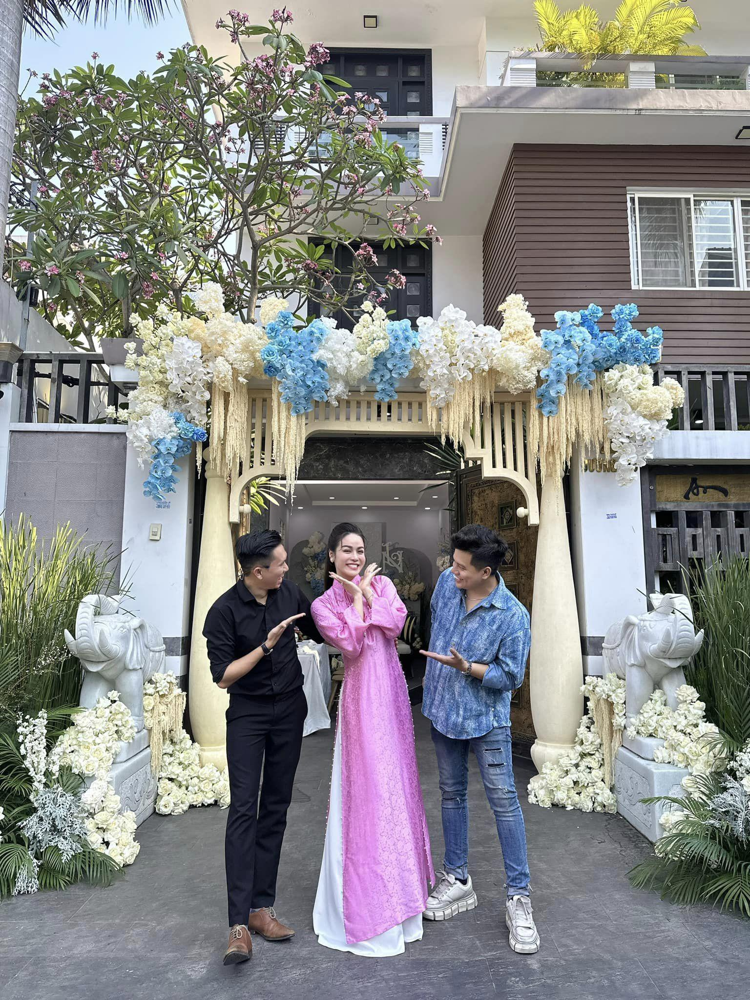

Sự thật video được cho là Nhật Kim Anh đã bí mật tổ chức đám cưới ở tuổi 39.
Mới đây, một đoạn clip Nhật Kim Anh gây xôn xao mạng xã hội. Theo đó, nữ ca sĩ mặc áo dài hồng, trang điểm xinh đẹp đứng cạnh 6 cô gái diện áo dài xanh, tạo dáng chụp hình trước một chiếc cổng cưới.
Một nhà thiết kế thời trang cưới, đồng thời là người em thân thiết của giọng ca Lâu đài cát, cũng chia sẻ hình ảnh hậu trường buổi chụp, cùng với đó là những bộ trang sức kim cương rực rỡ. Điều này khiến dân mạng suy đoán Nhật Kim Anh đã tìm được hạnh phúc mới và âm thầm lên xe hoa ở tuổi 39.
Thực chất Nhật Kim Anh chỉ đến dự lễ cưới của một người em trong công ty cô. Trên trang cá nhân, diễn viên Tiếng sét trong mưa cũng đăng tải đoạn clip chụp chung với chủ nhân buổi tiệc. Cô dí dỏm bày tỏ: "Mai mốt cưới thiệt, chắc không ai tin nữa quá".
Dưới bài viết, đa số ý kiến bày tỏ sự mong chờ được nhìn thấy giọng ca 8X thực sự mặc áo dài cưới lên xe hoa về nhà chồng. "Chị mặc đồ như vậy ai nghĩ chị không phải là nhân vật chính đâu", "Khi lấy chồng nhớ thông báo cho fan nha chị ơi"... là một số bình luận của dân mạng.
Chia sẻ với chúng tôi cách đây không lâu, giọng ca sinh năm 1985 bày tỏ, nhiều khán giả trông đợi cô sớm tìm được hạnh phúc mới và công khai người yêu. Tuy nhiên, cô lúc này muốn giữ kín chuyện riêng tư để tập trung cho công việc và lo cho gia đình. "Còn gì sung sướng hơn với một người nghệ sĩ khi được khán giả quan tâm, dành nhiều tình cảm. Tôi không đoán được tương lai cho mình nhưng tôi tin vào duyên phận. Đến một lúc nào đó tôi hy vọng sẽ kết hôn và sẽ thông báo tin vui này tới khán giả", cô nói.
Nhật Kim Anh cho biết, hiện cô dành hầu hết thời gian cho công việc kinh doanh và vun đắp tình cảm cho con trai. Dù vậy, nữ ca sĩ vẫn xác định nghệ thuật là đam mê cả đời nên chưa bao giờ có ý định từ bỏ. Khi sắp xếp được lịch trình, cô liền bắt tay thực hiện các dự án để gửi đến khán giả.
Về chuyện tình cảm, Nhật Kim Anh và doanh nhân Bửu Lộc từng được biết đến là một cặp đôi đẹp trong showbiz, nhưng cuộc hôn nhân nhanh chóng tan vỡ vì cả hai không còn tìm được tiếng nói chung. Sau những kiện cáo ồn ào, Nhật Kim Anh và chồng cũ đã bỏ qua được những khúc mắc trong quá khứ và bình thường hóa mối quan hệ. Nữ ca sĩ hi vọng, con trai luôn hạnh phúc trong tình yêu thương từ cả hai bên gia đình nội ngoại.
Sau này, Nhật Kim Anh thường được ghép đôi với nhiều "nam thần" showbiz như diễn viên Lợi Trần, ca sĩ TiTi (HKT). Tuy nhiên cô đều khéo léo phủ nhận.